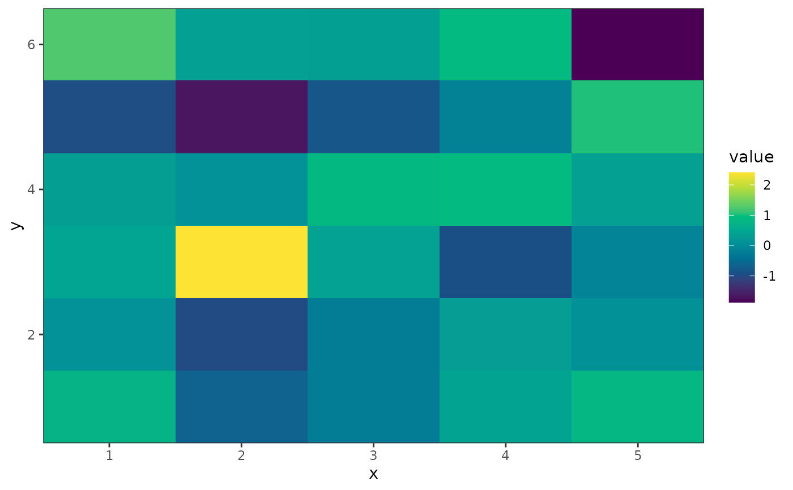
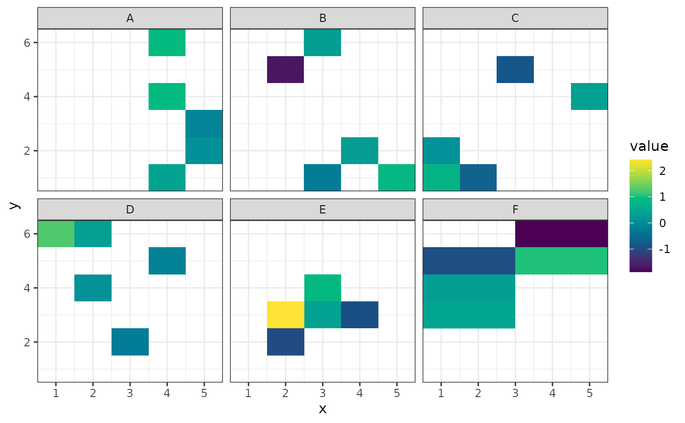
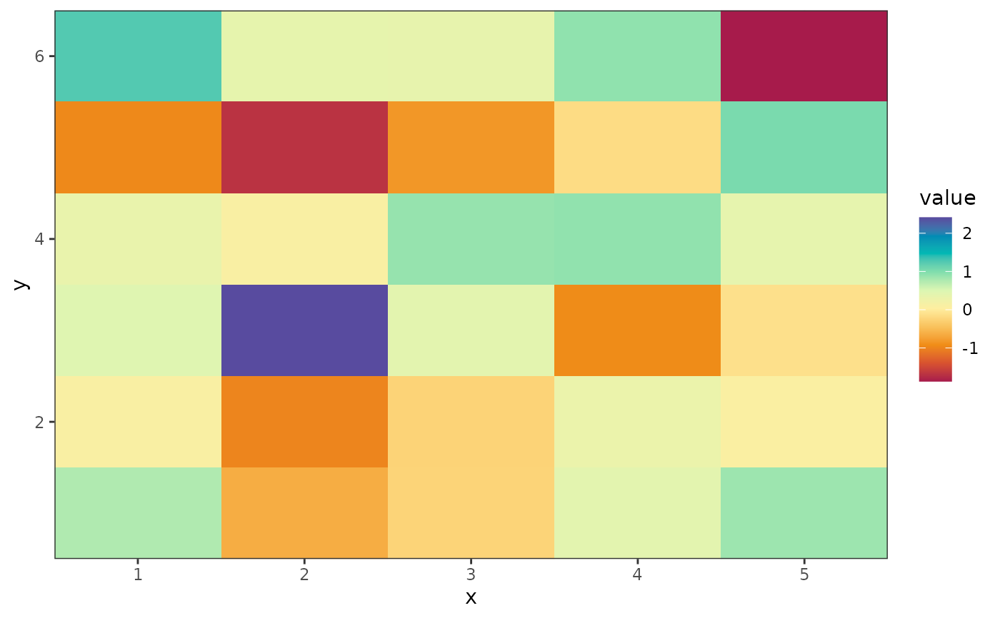
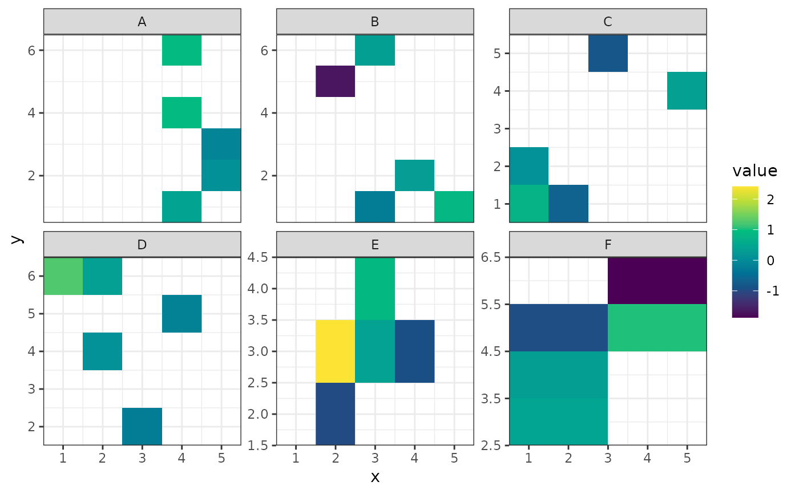
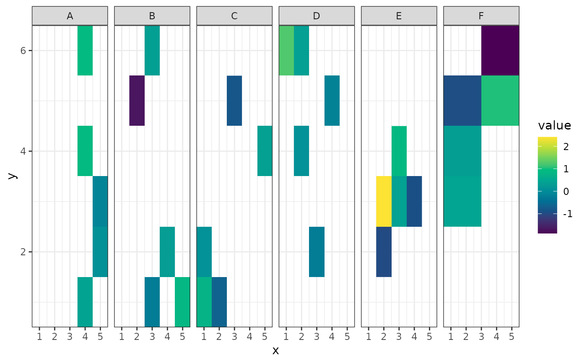

This function plots a heatmap of variables in a grid layout, optionally grouping them.
Usage
heat_map(
data,
value,
x_axis,
y_axis,
grouping = NULL,
raster = TRUE,
smooth = FALSE,
palette = "default",
...
)Arguments
- data
A data frame containing the data to be plotted.
- value
A column of
data, containing the values that vary over the space which produces the colours.- x_axis
The column of
datato use as the x axis data.- y_axis
The column of
datato use as the y axis data.- grouping
An optional grouping variable to facet the plot by.
- raster
Logical (default:
TRUE). IfTRUEusesggplot2::geom_raster()for speed. Will not work if the grid is irregular.- smooth
Logical (default:
FALSE). IfrasterisTRUE, interpolation can be applied across the grid to obtain a smoothed grid. Ignored ifrasterisFALSE.- palette
Colour palette to use. By default it will use the
viridis(colour-blind friendly) palette. Other palettes available can be seen withgrDevices::hcl.pals().- ...
Other arguments passed to
ggplot2::facet_wrap()
Examples
set.seed(42)
dat <- expand.grid(x = 1:5, y = 1:6)
dat$value <- rnorm(30)
dat$groups <- sample(rep(LETTERS[1:6], times = 5))
heat_map(dat, value, x, y)

# Column names can be quoted, but don't need to be.
heat_map(dat, "value", "x", "y", "groups")

# Different palettes are available
heat_map(dat, value, x, y, palette = "Spectral")

# Arguments in ... are passed through to facet_wrap
heat_map(dat, value, x, y, groups, labeller = ggplot2:::label_both)
heat_map(dat, value, x, y, groups, scales = "free_y")

heat_map(dat, value, x, y, groups, nrow = 1)
